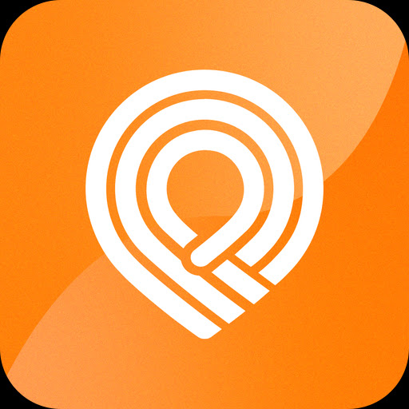
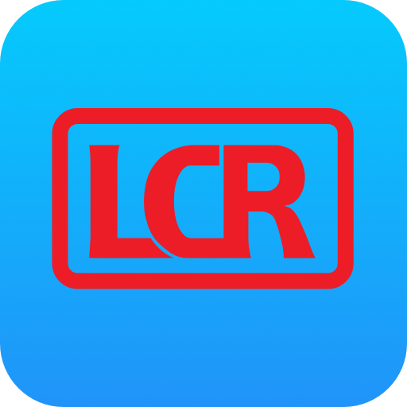
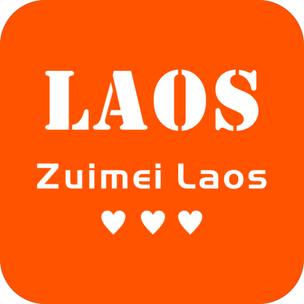
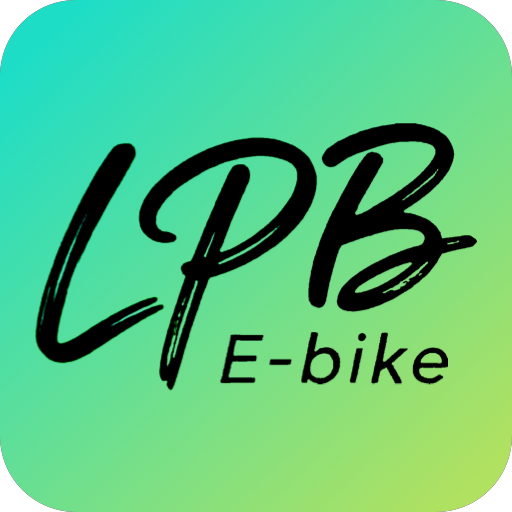

已购机票
保存新的图片或链接后，将覆盖当前全部机票记录。
ITINERARY
从岘港海岸与会安灯火出发，在胡志明留出一晚半日的城市切片，再直飞万象，沿中老铁路走过万荣山水与琅勃拉邦古城，10 月 5 日回到万象。
保存新的图片或链接后，将覆盖当前全部机票记录。
HX546抵达岘港国际机场；完成入境及领取行李后，乘车前往已订的M Village Hotel Da Nang Centre（海州区市中心），不再前往美溪片区旧住宿。 [14][22][28]
搭乘已出票的 VJ1831 从胡志明新山一机场 T2 直飞万象，从瓦岱国际机场办理老挝入境后进入市区 [15][26][33]
选择依据：航班已确定为 16:25—18:25，胡志明上午行程可保留，但 12:30 后不再安排景点
从Souphattra Hotel前往瓦岱国际机场，搭乘已改订的老挝航空QV881万象至广州航班，13:10起飞、16:10抵达广州；出发时间沿用原行程。 [21][23]
岘港、会安、胡志明：叫车、摩的或外卖。
市区及机场、车站叫电动出租车。
国内手机号可注册（游客实测），需接收验证码。
叫嘟嘟车或汽车，在 App 内确认报价。
需老挝手机号接码（游客经验），纯流量卡不能代替。
万象—万荣—琅勃拉邦：查票、购票和订单管理。

古城市区找车、扫码解锁和查看电量。
认车身品牌选 App，不只凭绿色车身判断。
扫码使用 LPB 电动车，查看剩余里程。
服务区内还车并结束计费；临时锁车仍计费。正式路线按当天顺序显示；定位只在点击后请求。
以下是当天值得考虑的地点，顺路或专程均可选择，不必全部前往；可按兴趣调整原安排，留意已订交通与预约。
与已订中央酒店同在陈富街，把咖啡与小件手信合并，最省折返。
以下是当天值得考虑的地点，顺路或专程均可选择，不必全部前往；可按兴趣调整原安排，留意已订交通与预约。
古城步行时可看纸品、明信片；不把需要预约的手作体验塞进短停。
午后避热、避雨的室内茶歇，与咖啡选一家即可。
在陈富街经过时可看手信；天气好才上露台，雨天不强行选户外。
675 Hai Bà Trưng 具体分店，愿意往古城北侧稍绕再选，不误去另一同名门店。
想吃简餐时替代一顿或外带，不在已吃饱时为了打卡再排队。
以下是当天值得考虑的地点，顺路或专程均可选择，不必全部前往；可按兴趣调整原安排，留意已订交通与预约。
以下是当天值得考虑的地点，顺路或专程均可选择，不必全部前往；可按兴趣调整原安排，留意已订交通与预约。
只有小雨或雨停、且有遮蔽座位时选；半开放空间不当作强降雨首选。
以下是当天值得考虑的地点，顺路或专程均可选择，不必全部前往；可按兴趣调整原安排，留意已订交通与预约。
离滨城市场较近，适合短饮品；若昨天下午已去过就不必重复。
以下是当天值得考虑的地点，顺路或专程均可选择，不必全部前往；可按兴趣调整原安排，留意已订交通与预约。
愿意专程去河畔吃午餐时选；不是塔銮到凯旋门的天然顺路点。
想看手工艺品、咖啡豆和小包装挂耳时选，购物与咖啡合并一次。
以下是当天值得考虑的地点，顺路或专程均可选择，不必全部前往；可按兴趣调整原安排，留意已订交通与预约。
需要室内避热时与露台咖啡二选一，门店已核对是万荣分店。
以下是当天值得考虑的地点，顺路或专程均可选择，不必全部前往；可按兴趣调整原安排，留意已订交通与预约。
万荣分店的咖啡体验是与露台不同的选择；想专程坐店可以调整普通游览。
以下是当天值得考虑的地点，顺路或专程均可选择，不必全部前往；可按兴趣调整原安排，留意已订交通与预约。
想看银饰与小件手作时先选这一家；不为购物压缩登山时间。
主要短逛手工艺、茶叶与选物，不把店铺误写为必须坐下的下午茶。
古城具体精品店看织物手信；不是需专车前往的 Living Crafts Centre。
行程强度1.5 🌟
住宿：已预订：M Village Hotel Da Nang Centre（9/25 入住，1 晚）；地址：177 Tran Phu, Hai Chau I Ward, Hai Chau District, Da Nang City；位于海州区市中心，官网显示前台 24 小时开放，适合 9/25 晚到店。
行程强度3.0 🌟
住宿：已预订：M Village Resort Riverbeach Hoi An（9/26—9/28，连住 2 晚）；15:00 后入住；地址：5 Cua Dai, Hoi An Dong Ward, Da Nang City 560000。退房后带行李，经五行山顺路前往会安。
行程强度2.5 🌟
住宿：M Village 会安 Riverbeach 度假村（连续第 2 晚，已预订）；白天在度假村和 Cua Dai 海滩慢游，下午至夜间进入会安古城，结束后返回同一酒店。
行程强度2.5 🌟
住宿：9月28日岘港酒店（待定，住 1 晚）；建议优先海州区或岘港机场东侧，兼顾当日下午活动及次日早班国内航班；如 M Village 岘港中心仍有房，可优先回住。
行程强度2.5 🌟
住宿：首选：Silverland Yen Hotel（9/29—9/30，1 晚）；从 9/28 已确认的岘港酒店退房后前往岘港机场；按海州区/机场东侧住宿估算，建议 08:10 左右出发。
行程强度1.5 🌟
住宿：已预订：Souphattra Hotel Vientiane（9/30—10/2；原 10/6—10/7 后段待改为 10/5—10/6）；抵达后前往 Ban Phonxay/Xaysettha 区的酒店；两段万象住宿已订同一物业，确认中间寄存非贵重行李。
抵达瓦岱机场后乘出租车或网约车前往已预订的 Souphattra Hotel Vientiane（Ban Phonxay/Xaysettha），不在机场段安排步行。
地址：23 Singha Road, Ban Phonxay, Xaysettha district, Vientiane Capital, Lao PDR
行程强度2.5 🌟
住宿：Souphattra Hotel Vientiane（连续第 2 晚）；酒店位于 Ban Phonxay/Xaysettha，靠近凯旋门片区；往湄公河夜市及市中心西侧活动结束后，预留打车返回酒店。
行程强度2.5 🌟
住宿：已确认：阿玛瑞万荣酒店 Amari Vang Vieng（10/2—10/4，2 晚）；酒店本身可当一处景点：傍晚在泳池看山与南松河、等日落，不必专程外出找观景点。日期沿用原日程；日落效果取决于当天天气。
行程强度4.0 🌟
住宿：已确认：阿玛瑞万荣酒店 Amari Vang Vieng（连续第 2 晚）；一日游返店后，可把泳池山景与日落当作当天收尾；不再叠加一场固定时间的登山。
行程强度3.0 🌟
住宿：已确认：The Jam Boutique Hotel Luang Prabang（10/4—10/5，1 晚）；从万荣阿玛瑞退房后北上，抵达先入住 The Jam；10/5 按酒店实际寄存安排取回行李再赴车站，不沿用旧酒店接送路线。
出站后前往用户确认的 The Jam Boutique Hotel Luang Prabang，放下行李后再去古城。
地址：Oupalathxiengkong Road, Ban Viengkeo, Luang Prabang, Laos
行程强度3.5 🌟
住宿：Souphattra Hotel Vientiane（需将原预订改为 10/5 入住，1 晚）；当天必须回万象过夜。优先确认并购买白天较早的 LCR 班次；若只有较晚班次或无票，取消关西瀑布并改乘较早可订班次。
行程强度1.0 🌟
住宿：Souphattra Hotel Vientiane（10/6 退房；须确认改为 10/5—10/6）；起飞前约 3 小时抵达机场。已记录老挝航空 QV881、日期、航线及时刻；出发前核对航站楼、行李规则和值机截止时间。
| 出发地 | 目的地 | 出发窗口 | 抵达窗口 | 方式 | 参考时间 | 参考费用 | 特殊核验 |
|---|---|---|---|---|---|---|---|
| 9 月 26 日午后；五行山游览后 | 9 月 26 日 15:00 后入住会安 | 网约车/包车 | 单程约 50–60 分钟 | 按当日实时报价 | 酒店已订 9 月 26—28 日；车辆按五行山游览结束时间接往会安，不安排当晚返回岘港 [1][3] | ||
| 9 月 29 日 10:50（DAD T1） | 12:15（SGN T1） | VJ629 直飞（已预订） | 1 小时 25 分 | 已购，金额未录入 | 截图显示出票处理中；出发前确认最终出票、行李额和线上值机规则 [25][33] | ||
| 9 月 30 日 16:25（SGN T2） | 18:25（VTE） | VJ1831 直飞（已出票） | 2 小时 | 已购，金额未录入 | 按用户已出票截图录入；出发前确认行李额、值机柜台和航班动态 [26][33] | ||
| 10 月 2 日上午 | 中午前后 | 中老铁路 | 待 LCR Ticket 放票后确认 | 待 LCR Ticket 实时票价 | 车站接驳时间必须与车次一并核验 [8][18] | ||
| 10 月 4 日上午 | 中午前后 | 中老铁路 | 待 LCR Ticket 放票后确认 | 待 LCR Ticket 实时票价 | 优先选白天班次，不订晚到班次 [8][10][18] | ||
| 10 月 5 日白天，优先较早班次；车次以 LCR Ticket 实际可订为准 | 10 月 5 日当日下午/傍晚，万象酒店过夜 | 中老铁路 | 待 LCR Ticket 放票后确认 | 待 LCR Ticket 实时票价 | 必须 10 月 5 日回到万象过夜；优先选较早班次。较晚班次仅作有票且当日运营确认后的备选，不以末班车作为唯一方案 [8][18][23] | ||
| 10/4入住后与夜市后；10/5仅在古城短逛的替代方案 | 按App可用车与服务区安排；不含上山及夜市内部步行 | 推荐绿色共享电动车：LAOS-Ebike / LPB-EBIKE（认车身品牌） | The Jam往返古城/夜市片区，单段骑行参考5–10分钟；取还车另约5分钟（规划估算，非实测） | 按对应App当次展示的计价/套餐，不引用旧笔记花费作现价 | 用户确认当地租用方便；公开实测支持两种绿色车，开发者确认扫码、电量、服务区还车与结束计费操作。无需大额预充；不承诺退款方式，不假定免驾照或无限停放。电动车专用导航尚未核验，不套用驾车/自行车耗时；车站和光西瀑布保留原交通。 [105][109][110][111][112] |
| 项目 | 估算 | 口径 |
|---|---|---|
| 住宿 | 5,000–8,500 CNY | 住宿分为 9/25 岘港、9/26—9/27 会安、9/28 岘港及后续城市；前两段已预订，当前预算仍为估算，待按订单实付金额更新。 [28][34][29][30][31][32] |
| 岘港至胡志明+胡志明至万象 | 650–1,500 CNY | 两段越捷机票已购；金额未提供，预算仍保留原规划值，实际支出可在网页中补录 [33] |
| 市内与车站/机场接驳 | 800–1,300 CNY | 包含岘港—会安、老挝车站接驳与短途网约车 [3][8] |
| 中老铁路 | 300–600 CNY | 3 段铁路预留，以 LCR Ticket 实时票价为准 [18] |
| 餐饮 | 1,200–2,200 CNY | 12 天日常餐饮，不含高档酒水与特别宴席 |
| 门票与活动 | 800–1,800 CNY | 关西瀑布、万荣一日线、市内景点等规划预留 [9][10][20] |
| 签证、保险与通信 | 500–1,000 CNY | 按官方签证页实际支付金额与个人保险方案结算 [14][15] |
| 合计 | 9,250–16,900 CNY | CNY，单人、不含已购国际机票与购物 |
仅保存在当前浏览器，不改变上方计划预算。
用于临近出发核验体感、降雨、阵风、紫外线和日落；灾害预警及交通公告优先。
页面首次加载不请求天气。
如果下雨怎么办？请点击
默认仅保存在当前浏览器；点击“编辑行程”并加入共享行程后，勾选与预订状态会实时同步。
汇总攻略内涉及预订的事实记录；点击“编辑行程”或任一状态并输入一次 8 位数字码后，状态实时同步，不改变原始行程安排。
2026-09-29｜地点待核验
1 人（待确认）
2026-09-30｜地点待核验
1 人（待确认）
2026-10-02 / 10-04 / 10-05｜地点待核验
1 人（待确认）
2026-10-05｜关西瀑布｜琅勃拉邦
1 人（待确认）
2026-10-03｜蓝泻湖 3｜万荣
按人计费，人数未补充
为什么值得：黄色老屋、会馆、河畔灯笼和夜市可在步行尺度内形成连续体验。
为什么适合：9 月 26—27 日已连住会安，9 月 27 日可从 Cua Dai 住宿出发，慢逛古城到夜间后返回同一家酒店。
为什么值得：歌剧院与阮惠步行街相距较近，适合在阵雨间隙用较短时间感受一区城市建筑。
为什么适合：9 月 29 日预报有阵雨，因此不再安排完整 Citywalk；只有晚餐前后雨停、无雷电和明显积水时才加入。
限制：出现雷电、短时强降雨或道路积水时直接放弃，不从室内主线切换到户外。
现场执行：从歌剧院外观走到阮惠步行街后即返回酒店，不再延伸到中央邮政局或其他街区。
为什么值得：石灰岩叠水、林下步道和指定泳池构成琅勃拉邦最完整的近郊自然日。
为什么适合：10 月 5 日需要从琅勃拉邦返回万象；只有已确认返程列车、包车接送和充足进站缓冲时，才考虑限时早场，否则取消瀑布行程。
限制：官方信息显示每日 08:00—17:30 开放；雨后水量和步道状态可影响可达范围。
现场执行：如车票、道路、天气或接送时间任一项无法确认，取消近郊段，改为古城短线并按时前往车站。
为什么值得：以滑索、河上划艇、轮胎漂流和3号泻湖组合体验万荣山水；用户确认实际参加过这四项。
为什么适合：在万荣阿玛瑞连住两晚，一日游后可以直接回泳池看山与日落，不再叠加固定的Nam Xay登山。
限制：与Nam Xay半日登山择日或调整项目组合，不固定叠加在同一天。
现场执行：下方原帖核心四项一致，但还含8号泻湖和午餐；不认为这些额外项目也包含在用户155元内。
为什么值得：会安古宅里的公平贸易社会企业，商品由残障手工艺人制作，购买与当地技艺和就业支持直接关联。
为什么适合：9 月 27 日已安排会安古城长距离步行，店铺位于 Nguyễn Thái Học 街，可在古城主线中停留，不需额外叫车。
为什么值得：集中陈列越南咖啡、零食与小型礼品，官网说明为明码标价，适合不想在传统市场反复议价的采购。
为什么适合：9 月 28 日从山茶半岛回市区时可顺带进入美溪一带；若当晚酒店在机场西侧，则放弃以免拖着行李横穿市区。
为什么值得：以老挝丝织、棉织和手工艺品为主，品牌公开公平贸易与本地材料原则，适合购买来源清晰的织物纪念品。
为什么适合：70 Rue Pangkham 位于凯旋门以西的市中心；Souphattra Hotel 在 Ban Phonxay/Xaysettha。若 10 月 1 日已前往凯旋门，可在 19:00 前顺访；逛后需另乘车回酒店，不再描述为回酒店顺路。
为什么值得：店内集合老挝多民族社区的公平贸易织物、木雕、书籍和乐器，并披露销售对手工艺人伙伴的回馈机制。
为什么适合：Ban Vat Sene 门店在古城主路，可在 10 月 4 日抵达后、时间与营业状态允许时顺路逛；10 月 5 日优先保障返万象交通。
为什么值得：古城主街的手工首饰与小件纪念品店，游客实拍可辨认店招、饰品和布艺陈列；适合挑一件轻便、便于携带的小物。
为什么适合：10 月 4 日下午若抵达古城后仍有空档，可在普西山与夜市的步行范围内短停；若列车或接驳延误，直接跳过，不挤占日落窗口。
为什么值得：品牌古城分店集中展示老挝织物与小件手工艺品；游客照片可辨认 The Boutique by Ock Pop Tok 店招。
为什么适合：10 月 4 日古城主街步行时可作为 15—25 分钟的购物备选，不专程去河畔 Living Crafts Centre。
为什么值得：位于老公寓楼内的室内书店；已读游客笔记的书架实拍与商户官网地址相符，适合雨天短暂停留。
为什么适合：9 月 29 日抵达胡志明后若有雨，可在一区短线中安排约半小时；9 月 30 日仅适合赴机场前确有空档时顺访，不为此延误出发。
为什么值得：会安古城 92 Lê Lợi 的越南传统纸品小店，已读游客实拍可辨认店招、纸质手帐、明信片和印章台。
为什么适合：9 月 27 日古城步行时可作为 20 分钟的轻量伴手礼停靠；不需要额外安排远郊交通。
为什么值得：游客实拍显示同处的咖啡与礼品集合空间；可看老挝手工艺品、咖啡豆和小包装挂耳，比泛逛纪念品店更有明确选品。
为什么适合：适合作为 10 月 1 日市区活动的咖啡与购物备选；位于 Souphanouvong Ave，需从凯旋门另行前往，不压缩正式景点。
为什么值得：游客笔记记录一层英文书店、二层猫咖的复合空间，适合从寺庙与地标步行中切换到安静的室内停留。
为什么适合：若 10 月 1 日午后需要避开强日晒，可考虑用书店或猫咖替换另一处咖啡停留；店铺在市中心，但与凯旋门之间需另行乘车或按地图确认步行条件。
为什么值得：咖啡吧台与复古室内空间；采用念一原帖旧店图，不混用 Hồ Nghinh 新店。
为什么适合：9/26 上午慢启动，或 9/28 雨天市区替代；与其他咖啡店择一。
为什么值得：已读实拍可对应鱼池、绿植与座位；适合在城市漫步中短坐。
为什么适合：9/26 早餐后若想看鱼池环境，可短程乘车；9/28 雨天先确认有遮蔽座位。
为什么值得：原帖实拍同时出现店招、咖啡吧台和小店；可短逛明信片、布袋等具体货架，商品以现场为准。
为什么适合：9/26 中央酒店附近最省绕行的备选，喝咖啡与看手信合并一次。
为什么值得：对应原帖为蓝白建筑与海边座位的实景，不用生成图代替门店。
为什么适合：9/28 山茶半岛方向天气合适时选；雨大、海风强或返城余量不足就放弃。
为什么值得：原帖可对应复古店招与环境；靠近滨城市场，可用来替代一小段外观步行。
为什么适合：9/29 小雨或雨停时短停；9/30 上午只选普通咖啡，不久坐。
为什么值得：已读笔记记录雨天到访、上三楼及手冲体验；采用可见品牌杯垫和吧台的实拍，不用排行榜图。
为什么适合：9/29 可短程乘车替换户外段；9/30 如已经排队或楼梯不便则选更近的店。
为什么值得：原帖可见 VANG VIENG 店招，记录室内空调和咖啡简餐；不混用万象同名连锁分店。
为什么适合：10/2 入住后避热短坐；10/3 回镇午间只喝饮品，出餐慢就跳过。
为什么值得：原帖门头实拍写明 Nam Song Garden；作者只进入参观、没有消费，不据此评价餐食或承诺免费参观。
为什么适合：10/2 白天有余量可坐小院；10/3 仅在已回镇且确认开门时选，不能为看热气球耽误登山。
为什么值得：高楼面是会安有明确地域识别的面食，比为网红餐厅绕行更适合本路线。
为什么适合：9 月 27 日下午至夜间在古城有完整窗口，可现场选择卫生、客流正常的店铺，不需提前绑定单店。
为什么值得：烤盘与汤锅同桌的用餐方式在琅勃拉邦和万荣都容易找到，适合作为当地晚餐体验。
为什么适合：放在转场后的晚餐时段，无需专门跨城或压缩白天行程。
为什么值得：岘港本地牛肉米粉店，5 Phan Thành Tài 店被当地美食资料收录；可按喜好追加辣椒与配料。
为什么适合：9 月 26 日从海州区退房后南下五行山时可作为早午餐；若在此用餐，当天不再叠加另一家粉店。
现场执行：用户提到餐后搭配 Chè Liên 榴莲糖水；公开资料只核验到岘港多家分店，未证实与本店相邻，需按当天最近分店导航。
为什么值得：可在同一店比较河粉与河内烤肉米线，地址位于 Bắc Mỹ An，适合经过岘港南部时解决一餐。
为什么适合：与 Bún Bò Bà Rơi 属于 9 月 26 日转场午餐二选一；想要更浓郁汤底或河内风味时选这家。
为什么值得：当地客流较多的河粉店，122 Hồ Nghinh 店有 2026 年近期营业与用餐反馈，分量和价格适合作为轻松正餐。
为什么适合：9 月 28 日回岘港并前往山茶半岛时比南部 Nguyễn Văn Thoại 店更合路线；只选已核验仍营业的 Hồ Nghinh 店。
限制：46 Nguyễn Văn Thoại 店存在装修或停业信息冲突，不作为本次默认导航目标。
为什么值得：以牛骨和顺化牛肉粉为主，适合想尝大块牛骨、能接受汤底略甜并自行加辣调味的人。
为什么适合：372 Đống Đa 店在岘港北侧，不应为了打卡插入 9 月 26 日南下会安路线；仅在 9 月 28 日酒店落在海州北部且愿意绕行时考虑。
为什么值得：Michelin Guide 收录的平价越南菜小店，越南煎饼、椰子壳炒饭等适合多人或多菜分享。
为什么适合：位于滨城市场附近，9 月 29 日雨天短线可直接步行或短程叫车抵达；若航班晚点或降雨增强，优先保留这顿饭并取消户外建筑段。
为什么值得：古城主街上兼有茶饮、书籍与老挝小件手工艺品的室内短停点；游客实拍可辨认店名和店内陈列。
为什么适合：10 月 4 日到达古城后如有雨或体力下降，可在主街短坐，不挤占普西山日落时间；若转场晚点则跳过。
为什么值得：湄公河畔的咖啡与早午餐店；两篇游客笔记分别记录了老挝本地咖啡豆、香蕉松饼、贝果和店内环境。
为什么适合：10 月 1 日塔銮上午段与凯旋门下午段之间有空档；若想用一顿较长的午餐替代临时找店，可专程乘车到河畔，雨大或不愿跨区则放弃。
为什么值得：一区 134 Pasteur 的咖啡与半私密休息隔间；已读游客笔记记录了雨天在此等航班的实际体验，比继续户外步行更适合持续降雨时短暂停留。
为什么适合：9 月 29 日抵达胡志明后若持续下雨，可用这家店替换部分滨城市场步行线；9 月 30 日中午要去机场，不建议再购买长时段休息套餐。
为什么值得：南松河畔的露台咖啡店；已读游客笔记的照片可直接对应河景座位和店名标注，适合短坐看山水。
为什么适合：10 月 2 日抵达万荣并入住河畔酒店后，如还有白天空档，可选河边短坐；10 月 3 日户外活动后若已天黑或店已关，则直接返回酒店，不专程绕行。
为什么值得：与既有 Reaching Out 手工艺店不同，这家 131 Trần Phú 茶馆提供安静品茶的室内空间；游客实拍与官网门店信息可对应。
为什么适合：9 月 27 日古城步行中若需要避开午后闷热、安静坐一会，可在此替换一段街边闲逛；不占用会安酒店住宿时间。
为什么值得：166 Trần Phú 的古城楼上咖啡与手信空间，已读商户推广笔记照片可辨认临街店面和标识；体验评价不采用推广措辞。
为什么适合：9 月 27 日傍晚如仍在古城，可作为坐下休息或买小件手信的备选；若当天雨大，露台景观价值降低，可改茶馆室内停留。
为什么值得：游客实拍显示店内的树形咖啡拉花；与 71/26 Phan Chu Trinh 同名店区分，选择古城边 675 Hai Bà Trưng 门店。
为什么适合：9 月 27 日古城步行时可作为咖啡休息备选；与 Reaching Out 茶馆二选一即可，不建议连续坐店挤占古城时间。
为什么值得：115 Trần Cao Vân 的会安法棍店；游客实拍显示 mixed 法棍，官网可核对门店地址及堂食/外带方式。
为什么适合：9 月 27 日古城步行日前后作为简餐备选；若午餐已安排完整正餐，可外带或跳过，避免额外绕路。
为什么值得：用户推荐的万荣用餐选择。已读实吃笔记记录炭烤肉/烤肠、酸辣排骨汤，适合想尝当地酸辣与炭烤口味时选择。
为什么适合：住阿玛瑞时可安排一顿镇区正餐；10/2入住当天或10/3一日游返店、泳池收尾后择一天去，不把两晚都固定成同一家。
限制：公开体验有分歧：有游客喜欢口味和价格，也有游客反映环境/卫生不佳；到店若不能接受，换店而非因攻略推荐勉强消费。
现场执行：优先试烤肉/烤肠配米饭、辣排骨汤。原帖约30元/人只是该作者当次账单，不是当前定价。
会安、胡志明一区与琅勃拉邦都适合按街区连续行走，而不是为单一拍照点频繁跳转。
建议做法：按城区排连续步行线；胡志明远距离移动用 Grab，手机和相机避免靠车道侧外露。
市场、布施、寺庙与村落活动中，将镜头对准当地人或僧侣前先询问，不阻挡队列与通道。
建议做法：保持一步以上距离，不使用近距离闪光；对方犹豫时停止拍摄。
寺庙需覆盖肩膝，进入指定建筑前脱鞋；关西瀑布官方信息明确提醒不要穿过度暴露的泳装离开泳池区。
建议做法：随身带轻薄长裤/围巾；游泳后先穿好上衣再回到公共步道。
来源编号保持正文引用不变，以下按核验用途排列；常规小红书笔记已读取 41 / 10 篇（最低要求）；跨境到达/离开专项来源单独列出，不计入常规目标。